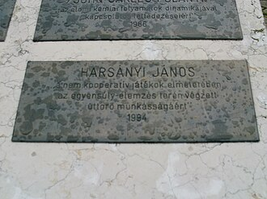

1920–2000
Hungarian-American
Game theory, economics, philosophy
John Charles Harsanyi (born János Károly Harsányi) grew up in Budapest and studied pharmacy at the University of Budapest. He later earned a doctorate in philosophy and converted to economics after witnessing the inefficiencies of Hungary's post-war command economy. In 1950, he fled communist Hungary, arriving in Australia with almost nothing, and eventually moved to the United States, where he earned a second doctorate in economics at Stanford under Kenneth Arrow.
His central contribution was solving a problem that had nagged game theorists since von Neumann: how to handle games where players do not know each other's preferences, beliefs, or available strategies. Harsanyi's ingenious solution (published in a three-part paper, 1967–68) was to introduce a fictional move by "Nature" at the start of the game, assigning each player a private type from a commonly known distribution. This transformation reduced games of incomplete information to games of imperfect information, making them amenable to standard analysis.
The concept of Bayesian Nash equilibrium — where each type plays optimally given beliefs about others' types — became the workhorse of information economics, mechanism design, and auction theory. Harsanyi spent most of his career at UC Berkeley and shared the 1994 Nobel Prize in Economics with Nash and Selten. He died in Berkeley in 2000.
| Phase | Page | Referenced for |
|---|---|---|
| Phase 15 | Nash Equilibrium | Extended game theory to incomplete information |
| Phase 15 | Nash Equilibrium | 1994 Nobel Prize with Nash and Selten |